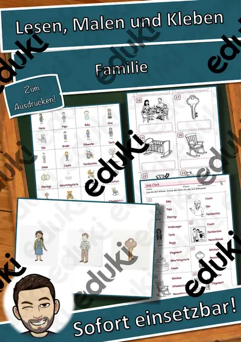
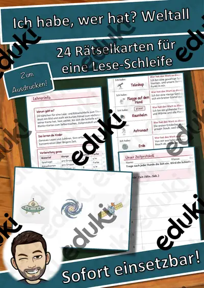
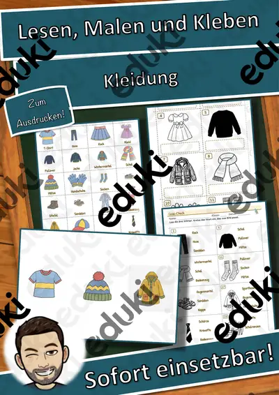
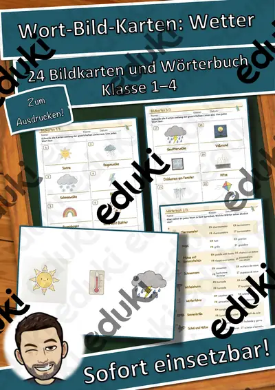
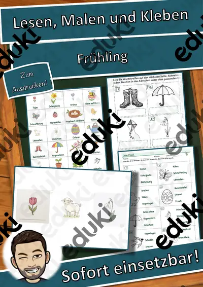
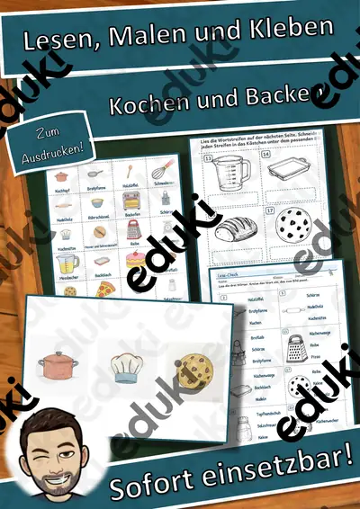
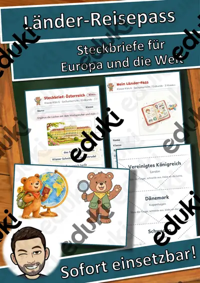
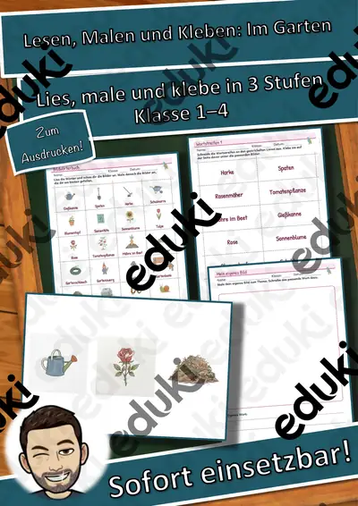
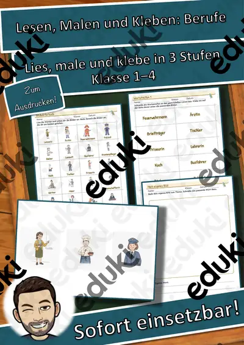

Malen, Zeichnen und Drucken: Arbeitsblätter für Klasse 1–6 (Kunst)
Malen und Zeichnen sind die Grundtechniken des Kunstunterrichts. Von Ausmalbildern über Mandalas bis zu Porträt und Stillleben entwickeln die Kinder Handgeschick und Bildsprache.
Die Begriffsliste dieser Einheit: Linien, Formen, Farben mischen, Porträt, Stillleben und Collage.
Wo genau im Lehrplan das Thema steht, unterscheidet sich von Land zu Land, häufig im Fach Kunst in den Klassen 1 bis 6. Gemeinsames Ziel: die Kinder gestalten Bilder mit unterschiedlichen Techniken und beschreiben ihre Wirkung.
Im Alltag einer Lehrkraft zählt, dass Material sofort einsatzbereit ist: Die Blätter zu Malen, Zeichnen und Drucken greifen Formen, Farben mischen und Porträt auf, lassen sich ausdrucken und kommen mit Lösungen, damit die Vorbereitung kurz bleibt. Leistungsstarke und schwächere Lesende erhalten über die Lesespurgeschichten Texte in drei Stufen.
Zum Thema finden Sie 72 Materialien, unter anderem Würfel-Malspur Materialpaket: 3 Themenhefte, Lesen, Malen und Kleben: Familie und Lesen, Malen und Kleben: Fahrzeuge, verteilt auf 5 Lesespurgeschichten in Klasse 1–7. Eine Stunde freies Zeichnen zu einer Musik schafft Entspannung und überraschende Ergebnisse.
Das gehört zum Thema
Passende Arbeitsblätter und Materialpakete

Würfel-Malspur Materialpaket: 3 Themenhefte – Würfeln, Zählen, Malen in 3 Stufen (Vorschule, Klasse 1–2, DaZ)

Pixelbilder – wie der Computer Bilder speichert – Lesespurgeschichte mit Rätselaufgaben (Klasse 3)

Das Stillleben – Dinge ins Bild setzen – Lesespurgeschichte mit Rätselaufgaben (Klasse 6)

Collage und Materialbild – Kunst aus Papier, Stoff und Knöpfen – Lesespurgeschichte mit Rätselaufgaben (Klasse 5)

Das Porträt – Gesichter zeichnen und verstehen – Lesespurgeschichte mit Rätselaufgaben (Klasse 7)

Die Perspektive – Lesespurgeschichte mit Rätselaufgaben (Klasse 7)

Lesen, Malen und Kleben: Familie – Lesen und Malen – Klasse 1–4

Lesen, Malen und Kleben: Fahrzeuge – Lesen und Malen – Klasse 1–4

Lesen, Malen und Kleben: Wilde Tiere – Lesen und Malen – Klasse 1–4

Lesen, Malen und Kleben: Kleidung – Lesen und Malen – Klasse 1–4

Lesen, Malen und Kleben: Im Zoo – Lesen und Malen – Klasse 1–4

Lesen, Malen und Kleben: Im Restaurant – Lesen und Malen – Klasse 1–4

Lesen, Malen und Kleben: Frühling – Lesen und Malen – Klasse 1–4

Lesen, Malen und Kleben: Sommer – Lesen und Malen – Klasse 1–4

Lesen, Malen und Kleben: Bienen – Lesen und Malen – Klasse 1–4

Lesen, Malen und Kleben: Kochen und Backen – Lesen und Malen – Klasse 1–4

Lesen, Malen und Kleben: Wetter – Lesen und Malen – Klasse 1–4

Lesen, Malen und Kleben: Obst und Gemüse – Lesen und Malen – Klasse 1–4

Lesen, Malen und Kleben: Im Garten – Lesen und Malen – Klasse 1–4

Lesen, Malen und Kleben: Berufe – Lesen und Malen – Klasse 1–4

Lesen, Malen und Kleben: Haustiere – Lesen und Malen – Klasse 1–4

Lesen, Malen und Kleben: Sport – Lesen und Malen – Klasse 1–4

Lesen, Malen und Kleben: Körper und Sinne – Lesen und Malen – Klasse 1–4

Lesen, Malen und Kleben: Märchen – Lesen und Malen – Klasse 1–4
Weitere 48 Materialien zum Thema im Material-Finder.
Häufige Fragen
Für welche Klassenstufe passen die Arbeitsblätter zu Malen, Zeichnen und Drucken?
Der Schwerpunkt liegt auf Klasse 2; insgesamt deckt die Auswahl (72 Titel) Klasse 1–7 ab. In der Beschreibung jedes Materials steht die empfohlene Stufe.
Welche Inhalte decken die Materialien zu Malen, Zeichnen und Drucken ab?
Inhaltlich reicht die Auswahl von Linien über Formen und Farben mischen bis zu Stillleben; Details stehen bei den einzelnen Materialien.
Wie setze ich Malen, Zeichnen und Drucken im Unterricht ein?
Beginnen Sie mit einem Einstieg zu Linien und ergänzen Sie nach Bedarf. Eine Stunde freies Zeichnen zu einer Musik schafft Entspannung und überraschende Ergebnisse.
Mehr Material nach Fach und Klasse
- Alle Materialien Deutsch
- Arbeitsblätter Deutsch Klasse 1
- Arbeitsblätter Deutsch Klasse 2
- Arbeitsblätter Deutsch Klasse 3
- Arbeitsblätter Deutsch Klasse 4
- Arbeitsblätter Deutsch Klasse 5
- Arbeitsblätter Deutsch Klasse 6
- Unterrichtsmaterial Klasse 1
- Unterrichtsmaterial Klasse 2
- Unterrichtsmaterial Klasse 3
- Unterrichtsmaterial Klasse 4
- Unterrichtsmaterial Klasse 5
- Unterrichtsmaterial Klasse 6
Verwandte Lehrplanthemen
- Basteln, Falten und Werken (Kunst, Klasse 1–6)
- Künstlerinnen und Künstler (Kunst, Klasse 3–10)
- Jahreszeiten (Sachunterricht, Klasse 1–4)
- Kunstepochen und Stile (Kunst, Klasse 5–10)
- Weihnachten und Advent (Religion, Klasse 1–6)